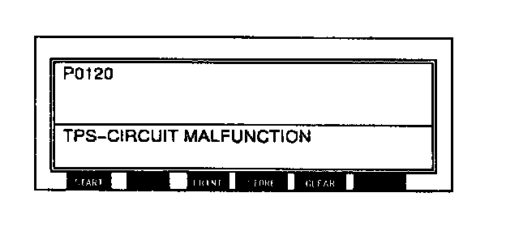

Operation CHARM
: Car repair manuals for everyone.
Home
>>
Mazda
>>
1999
>>
MX-5 Miata L4-1.8L DOHC
>>
Repair and Diagnosis
>>
Powertrain Management
>>
Computers and Control Systems
>>
Testing and Inspection
>>
Reading and Clearing Diagnostic Trouble Codes
>>
Clearing Diagnostic Trouble Codes
Clearing Diagnostic Trouble Codes
1.
After repairs have been made, perform the DTCs Reading procedure.

2.
Press CLEAR.
3.
Press the trigger key.
4.
Press the cancel key.
5.
Ensure that the customer's concern has been resolved.